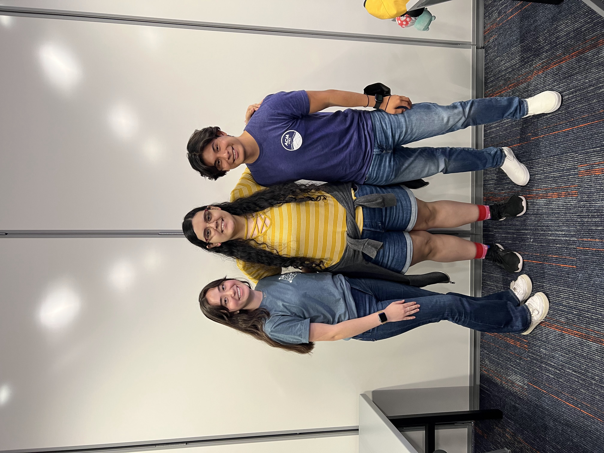

For Fun
Teaching & Mentorship
ACM Involvement:
As an officer of the Association for Computing Machinery Minority Chapter, I helped bring our own unique perspective to the organization. Together with my team, I organized events featuring speakers from a wide range of companies, covering topics from Cybersecurity to Data Science to Software Engineering. I also had the opportunity to lead an introductory Python workshop. Recordings of our events can be found in the live section of ACM–UTSA: https://www.youtube.com/@acmutsa/streams
Here are some of my favorite events:
- Video of me hosting “A Day in the Life of a Bioinformatician”: Watch here
My Mentorship Journey:
As an Honors College Residential Assistant, I had the privilege of mentoring many students, each with unique goals and aspirations.
At Stanford, I continue this commitment through the Peer2Peer program, where I mentor PhD applicants, and at El Centro, where I support first-generation Hispanic students like myself. Having gone from working construction at age 8 to pursuing a PhD at Stanford, I know firsthand how winding the journey can be. That’s why I believe it’s essential to keep the door open for those who come after us.
Civil Engineering
Pictures of me in the American Society for Civil Engineering:
Fun fact! A huge part of my life revolved around working out in the construction field helping my dad build foundations! No not foundation models, but rather concrete foundations for homes around the city of Houston. Once I attended UTSA, I knew I did not want to lose those skills. As a result, I joined the american society for civil engineering where I participated in Steel Bridge, and UTSA’s pumpkin Smash Competition!
Outdoors
When I first started college, I wasn’t sure what I wanted to study—I actually changed my degree five times. For a few months, I pursued environmental science, inspired by the dream of being a forest ranger. That dream briefly became reality during the pandemic, when I packed my bags and moved to Colorado to work with the Rocky Mountain Conservation Corps.
My days began at 5 a.m.—coffee in one hand, a breakfast burrito in the other—followed by a team meeting to set our goals. Miles from the nearest parking lot, we hiked from camp to the day’s worksite.

My role was as an environmental trail steward—essentially, a trail builder. We cut through rock, moved boulders weighing tons, and crushed stone to create new pathways. It was tough, rewarding work.
While those skills don’t directly apply to my field now, that summer shaped my perspective. I came to appreciate how deeply the environment is woven into our lives: a single break in the chain ripples through food systems, ecosystems, and human health. Even today, my work is driven by the same realization—climate shapes our health, influences the spread of infectious diseases, and intensifies rare (but increasingly common) extreme events.